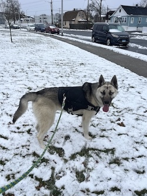

Whoami?

I am a student at the Rochester Institute of Technology studying Computing and Information Technologies. I am interested in weightlifting, cybersecurity, and rock climbing. I have a 3 year old husky named Hercules. My junior year of high school I decided I wanted to work in the tech field after interning at CyberArts, an online cybersecurity education program, where I had the pleasure of teaching middle and high school students nationwide. The experience taught me a lot of technical knowledge along with soft skills.
Upbringing

I was raised a second generation immigrant, with both of my parents moving to the United States from Turkiye in their 20's. I lived in a quiet neighborhood, so I gravitated towards computers at a young age. It started with video games: I taught myself basic DLL injection to see how far I could bend them. After I got bored of that, the same passion shifted into a desire to learn how web applications worked, and how they could be exploited. The first milestone I reached in this journey was a responsible disclosure of a vulnerability, which is now in the process of publication in the Common Vulnerabilities and Exposures database. Outside of tech, I got really interested in wrestling and combat sports. I competed for 3 years at the high school level, getting a record of 27-10.
Aspirations & What I am working on
Now that I am a student, I am looking for the opportunity to show what I know and build new knowledge. Given the current job market, I am looking for internships and work in the IT field. After completing an internship at an MSSP my senior year of high school, I had the chance to meet with pentesters and SOC analysts. I came to the realization that I felt more of a drive to pursue offensive security.
I am currently trying to involve myself on campus in and outside of tech. I have taken an e-board position at Mirai, an RIT club which works with startups to find project based learning for students. I am also in RITSEC, club wrestling, and a pledge for Phi Kappa Psi.